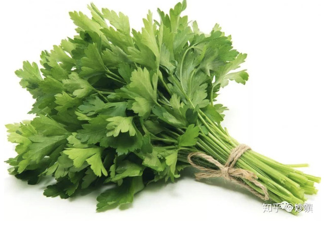

十大香草
来源：知乎
| 香草 | 气味 | 用途 | 注释 |
|---|---|---|---|
| 罗勒 Basil | 甘甜，略带咸鲜味 | 青酱 Basil Pesto | 全能香料 |
| 欧芹 Parsley | 清新，所以百搭！ | 沙拉; 沙拉酱汁; 海鲜料理; 汤品; 面包 | |
| 百里香 Thyme | 甘甜温和，略带辛香 | 几乎炖煮任何禽类、猪牛羊、海鲜还有蔬菜料理 | 又名麝香草 |
| 迷迭香 rosemary | 香味浓郁，带有松木香，甜中微苦，气味强势 | ||
| 莳萝 Dill | 温和不刺激，清香甘甜，淡香料味 | 烹调鱼虾贝类，和三文鱼尤其搭；黄瓜沙拉；酸奶酱和沙拉酱 | |
| 鼠尾草 Sage | 本味浓烈，夹杂些樟脑气味 | 烹调肉类，缓和腥味；意式燉饭 | 气味强烈有解腻的功效，西餐烹饪里喜欢用它与油腻的东西搭配 |
| 牛至 Oregano | 气味浓烈，辛辣略苦涩的口感 | 做披萨；制作意面酱汁；烹调各种肉类及鱼，去膻 | |
| 龙蒿 Tarragon | 浓郁但不冲，比较温和，略带甘甜味道接近八角 | 烹调海鲜；炖猪牛羊红肉；拌沙拉 | 味道接近八角 |
| 虾夷葱 Chive | 味道柔和，略带清香 | 撒在西式炒蛋和煎蛋上；拌在奶酱里；装饰浓汤 | |
| 香叶／月桂叶 Bay Leaf | 淡淡甜味 | 炖肉 |
一大波异国美食，在微信公众号 “ 妙馔 ” 等你。我是coffee cat，住在德国，主业坐家翻译，是个虔诚煮妇。世事难料，看来看去还是盘中餐最可靠。等你，同道中人。
和你一样，好多年前，我根本不懂香草的世界。葱姜蒜八角花椒才刚整明白，哪有闲情去研究这些杂草？
" 你管谁叫杂草?" 草们集体坐不住了。好好我错了，你们可是厨房里的大宝贝，是西餐烹饪的灵魂，少了你们就如同少了葱姜蒜的中国菜会无法想象一样。
有时坐在西餐馆里感叹盘面之美，就那么几根漫不经心的香草，把菜肴的格调又拉高了一层。
香草(herbs)和香料(spice)是西餐烹饪用到的调味。一般来说，香草是植物带有香味的叶子，而香料是植物的树皮、果实、根和茎。香草分为新鲜的和风干的，新鲜香草入菜要比干的好。读大学时去买菜，和它们打过无数的照面却茫然不知：这货是谁？吃的？养着玩的？我不识它们，也不关心。
后来爱上一首歌，电影毕业生的插曲 “卡斯特罗集市”。歌里反复吟唱着一句"Parsley, sage, rosemary and thyme" , 听得是一头雾水，数年后才知道原来是四种香草" 欧芹，鼠尾草，迷迭香，百里香"。
如果香草是推开西餐世界的一扇门，本期就来聊它们，仅是浅谈。本期有点长，能拉到最后的都是真爱。
1. 罗勒 Basil
罗勒品种繁多，这是两种最常用的。
意大利菜中使用最频繁的甜罗勒 (sweet basil)
▲新鲜甜罗勒，图源自网络。
▲干罗勒／罗勒碎，图源自网络。
气味：甘甜，略带咸鲜味。
回顾：
- 罗勒番茄大蒜慢烤鸡腿（强推!!）
- Frittata 意大利奶酪蔬菜烤蛋饼
- 意大利平民美食 Bruschetta
- 松子奶酪粒粒意面
coffee cat的晚餐：罗勒番茄大蒜慢烤鸡腿
是什么让我谈起这个烤鸡就很激动？
去做一下，不然再堆砌赞美，你也不懂。
记得要一盆栽的罗勒下去，别手软。
▲ 樱桃番茄汁、鸡汁、蒜汁、烤焦香的罗勒
完美交合
外焦内嫩吸饱汁液入味充分的鸡腿 …….
说不下去了，自己去烤。
应用：从基础意面酱汁到披萨，从沙拉到意面，罗勒太能揽事了，比马大姐还要忙。它有个情人叫番茄，是一对打不散的鸳鸯。
▲ 青酱 Basil Pesto，图源自网络。
用于拌意面，抹面包。
意大利每家每户的冰箱里可能都存放着青酱，
那种安全感就像中国人得有一瓶好辣酱一样。
▲ 青酱意面，图源自网络。
▲红酱 / 番茄罗勒酱Marinara，图源自网络。
▲以前在意大利点了这盘，全推给家里不爱吃鸡的那位了。
我眼中的欧洲黑暗料理之一， 因为不喜欢吃生罗勒。
九层塔(thai basil)
很多人是因为三杯鸡才知道有个九层塔，误以为它就是甜罗勒。九层塔在香气上更有冲击力，常用于东南亚菜 (泰国菜，越南米线) 和台湾菜，比如三杯鸡，出锅前撒入一把九层塔，香气瞬间迸发；而甜罗勒的香气要柔和些，叶片更大更肥厚一些。
▲九层塔(thai basil)，图源自网络。
叶片尖尖的，茎杆部分为紫红色，和甜罗勒的区别很明显。
coffee cat 的晚餐：好爱你呀三杯鸡！
▲ 用这个妥妥拿下家里不爱吃鸡的那位
罗勒特质：叶嫩，不耐热，遇热变黑，常用于做冷酱汁和沙拉。
强推的那道用了大量罗勒的烤鸡，是个反常规料理。
2. 欧芹 Parsley
又名洋香菜，外表很像香菜（芫荽），但不是一家的。在各种西式浓汤里放新鲜欧芹碎，就像中国人喝汤放香菜；在沙拉上撒一把欧芹碎，就像中国人拌凉菜撒一把香菜，要它的清新感。
▲新鲜欧芹，图源自网络。

▲干欧芹碎，图源自网络。
气味：比中国芹菜的味道重一点。清新，所以百搭！
回顾：
- 实用小技巧：早餐香草黄油
- 西式小食：欧芹蒜香棍
- 南瓜奶油浓汤
- 情人节餐：白酒香草烩青口＋法式奶油青口汤
- 如何做法式沙拉汁 Vinaigrette
应用：沙拉; 沙拉酱汁; 海鲜料理; 汤品; 面包。
▲ 香蒜欧芹烤龙虾，图源自网络。清新的欧芹很搭海鲜，去腥增香。
▲ 蛤蜊培根欧芹浓汤 & 鲜虾欧芹汤，图源自网络。
在西式浓汤里撒欧芹，就像中国人喝汤撒香菜。
3. 百里香 Thyme
又名麝香草，意大利、法国、希腊、中东等国家用得很多。它的香气温和，能与别的香草和谐同存。
▲新鲜百里香，图源自网络。
几乎炖煮任何禽类、猪牛羊、海鲜还有蔬菜料理时，都可以加入一两枝百里香，只要你喜欢它的味道。但它需要慢慢加热才能散发香味，香气慢慢渗透进料理中，所以用到百里香的时候要一开始就放。
百里香、欧芹的茎和月桂叶的组合在法文里叫“Bouquet Garni”，即香草束。把3种新鲜香草用棉绳绑在一起，整束放入锅中增香，炖好了再一次取出。
有一阵子我常做百里香炖鸡汤：取鸡的琵琶腿，加樱桃番茄，洋葱共煮，鸡腿断生后撕下肉，鸡肉和骨回锅，放入百里香的花蕊，磨上黑胡椒，文火煨半小时，末了撒一把青豆，磨入海盐调味。清爽甘甜，好喝！这锅汤也一举拿下家里不爱吃鸡的那位。
气味：甘甜温和，略带辛香，中国人比较能接受。
回顾：
- 新年餐：厨神狗蛋叔的酿馅烤鸡
- 百里香大蒜煎猪排配甜酸椒
- 香草白葡萄酒炖鸡
coffee cat的晚餐：法式白酒炖鸡，有百里香和别的香草。
▲ 之后会上这个食谱
coffee cat 去年的新年餐：填馅烤鸡。
想跟它叙旧的，戳上方蓝色链接。
▲鸡肚子里塞了些百里香和炒过的馅料
应用：肉类的炖菜和烤制，经得起长时间烹调；也适用快煎，比如煎猪排，煎鱼；腌肉腌鱼；做烤鸡填馅；汤品。
4. 迷迭香 rosemary
迷迭香的香味特别，轻搓近闻很浓郁，有一种独特的松木香，但掺杂了一丝苦。西餐烤肉烤鸡等硬菜常会用到它，去腥增香。要酌量用，不是老司机你一定hold不住。
▲新鲜迷迭香，图源自网络。
▲ 干迷迭香，图源自网络。
气味：香味浓郁，带有松木香，甜中微苦，气味强势，烹调中酌量用。
回顾：
- 香草白酒虾配爽脆苹果沙拉
coffee cat的晚餐：迷迭香烤脆皮土豆
▲ 醇厚的香气和厚实的土豆很搭
coffee cat的晚餐：法式白酒炖鸡，有迷迭香和别的香草。
▲ 之后会上这个食谱
应用：肉类鱼类和蔬菜的烹调，包括烩煮和烤制；法式煎羊排；烤土豆；做意式扁平类香料面包。
▲ 迷迭香柠檬烤鸡腿，图源自网络。
5. 莳萝 Dill
这货不是小茴香这货不是小茴香
不是小茴香…
莳萝很像中国北方的包饺子用的茴香，所以又叫“洋茴香”。它的气味香甜，香而不刺激，闻着能舒缓情绪，比小茴香温和。英文名也是这么来的，dill有平静，镇定，安慰之意。
莳萝长得很有仙气，叶子是羽毛状一丝一丝的，特别轻盈。它有“鱼之香草”的美誉。欧洲人做鱼常用到莳萝，就跟中国人做鱼要放姜去腥一样。尤其是烹调三文鱼，那几乎是一对拆不开的鸳鸯。
▲ 新鲜莳萝，图源自网络。
▲ 风干莳萝
气味：温和不刺激，清香甘甜，淡香料味。
回顾：
- 西式搅蛋＋烟熏三文鱼配面包
- 茴香柠檬白酒烤狼鲈
coffee cat 的晚餐：德国传统黄瓜莳萝沙拉
▲ 很柔和的口感，之后会上这个食谱。
应用：烹调鱼虾贝类，和三文鱼尤其搭；黄瓜沙拉；酸奶酱和沙拉酱。
6. 鼠尾草 Sage
欧洲有句谚语：“家有鼠尾草，医生不用找。” 它是欧洲中世纪以来备受推崇的天然草药。鼠尾草绿色中泛着淡灰，表面布层绒毛，与鼠尾有点像，气味强烈有解腻的功效，西餐烹饪里喜欢用它与油腻的东西搭配。
除了用于烹饪，它在德国还是很受欢迎的日常伴侣，超市药店都能找到鼠尾草润喉糖和鼠尾草茶。在口感上，它有青草的香气和淡淡的苦味。
▲ 新鲜鼠尾草，图源自网络。
气味：本味浓烈，夹杂些樟脑气味，烹饪后别有一股温润风味。
应用：烹调肉类，缓和腥味；意式燉饭；可泡茶；可做润喉糖。
▲ 意式南瓜燉饭，图源自网络。
意式燉饭口感浓滑却味道较淡，鼠尾草的香气很提味。
7. 牛至 Oregano
牛至，俗称披萨草，因为做披萨少不了它去调味。从中世纪以来，牛至就深受欧洲人喜爱，做成香袋携带，入菜调味，做成花茶。它是一种很地中海风味的香草（我理解，看见这种抽象描述会想打人，但肯定有懂的人），味道比较浓烈，尤其是干牛至。如果想减轻香草的味道，就用新鲜牛至。
▲ 新鲜牛至，图源自网络。

▲ 干牛至，图源自网络。
气味：气味浓烈，辛辣略苦涩的口感。
回顾：
- 周末的开始：鲜虾羊乳酪蛋饼
coffee cat 的早餐：乳酪鲜虾番茄蛋饼
▲ 牛至不仅能烹调肉类，它做在Frittata里也很给力。
应用：做披萨；制作意面酱汁；烹调各种肉类及鱼，去膻；入沙拉；用于做煎蛋omelet和意式蛋饼Frittata。
8. 龙蒿 Tarragon
龙蒿原产自亚洲，后来才传入欧洲。闻起来有一股浓郁的蒿草味，但并不冲，味道接近中餐用的八角。
我和这个香草的情份既浅又深。说浅，因为在德国龙蒿不太常见，我在厨房里也很少用它；说深，因为某天按照英国厨神狗蛋叔的方子，买了盆龙蒿做意面，配菜是蘑菇和韭葱，一举拿下家里不爱吃鸡的那位之芳心，从不跟我点菜的人竟然后来提过几次这个意面。真要感谢狗蛋叔没有乱推。
▲ 新鲜龙蒿，图源自网络。
▲ 干龙蒿，图源自网络。
气味：浓郁但不冲，比较温和，略带甘甜。
回顾：
- 蘑菇韭葱奶油意面
家里不爱吃鸡的那位心心念念的意面，狗蛋叔的方子。想叙旧的戳上方蓝色链接。
▲ 龙蒿最后的加入，提升了整盘的味道。
应用：烹调海鲜；炖猪牛羊红肉；拌沙拉。
9. 虾夷葱 Chive
葱家真是够乱的，大葱小葱香葱韭葱，还有叫小香葱的，这不是找事嘛！手指不沾阳春水的人懵圈是必然的。
那这位又是哪儿的一根葱呢？它和中国南方的小葱长得可真像，但调性又不同。
虾夷葱又叫细香葱，比南方的小葱更细，葱味没那么重，略带清香，并微微泛甜。气味易挥发，要避免加热，和西式炒蛋绝配。因为味道清淡，常用于西餐和日本料理中。
▲ 虾夷葱，图源自网络。
气味：味道柔和，略带清香。
coffee cat 的早餐：西式炒蛋配面包
▲ 只有我一个觉得蛋上撒葱很性感吗？
应用：撒在西式炒蛋和煎蛋上；拌在奶酱里；装饰浓汤。
10. 香叶／月桂叶 Bay Leaf
能看到这里的都是真爱，我想去咬根人参了。都不容易。
有没有被这些杂草弄得七荤八素了？好了不聊了，最后一个出来我就撤了。压轴的这片叶子，会让你心头一暖，眼熟吧，风干的就是中餐炖肉用的香叶呀，是中西香料界中最无差一个！阿弥陀佛，终于等来了娘家人！
这个就不啰嗦了。

▲ 西餐烹饪多用新鲜香叶，中餐用干的。
气味：淡淡甜味
回顾：
- 西班牙chorizo 肉肠杂蔬汤
- 如何做经典的西式鸡高汤
应用：炖肉呀！！